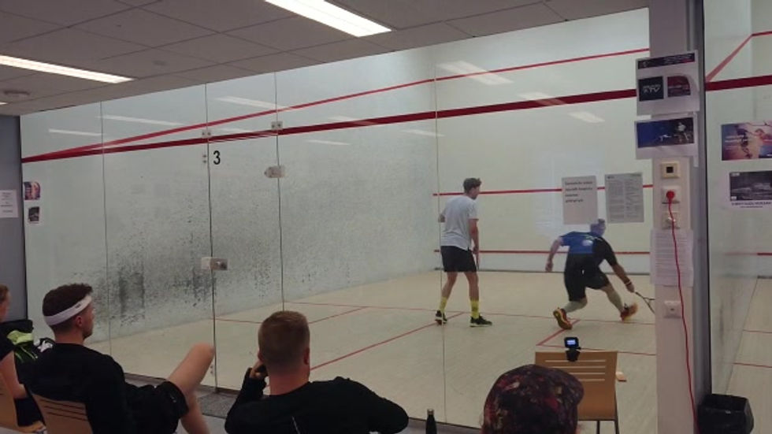

Kilpailu
Seuran mestaruuskilpailut
Seuran mestaruuskilpailut 2026
Tapahtumasta
Seuran vuosittaiset mestaruuskilpailut ovat yksi Nääs-Squashin tärkeimmistä perinteistä. Turnaus kokoaa seuran pelaajat yhteen kisaamaan seuran mestaruudesta kaikilla taitotasoilla.
Kilpailut pelataan avoimessa cup-muodossa. Kaikki seuran jäsenet ovat tervetulleita osallistumaan – oli sitten kyseessä ensikertalaiset tai kokeneet kilpapelaajat.
Ilmoittautuminen tapahtuu sähköpostitse. Lisätiedot ja aikataulut julkaistaan lähempänä tapahtumaa.